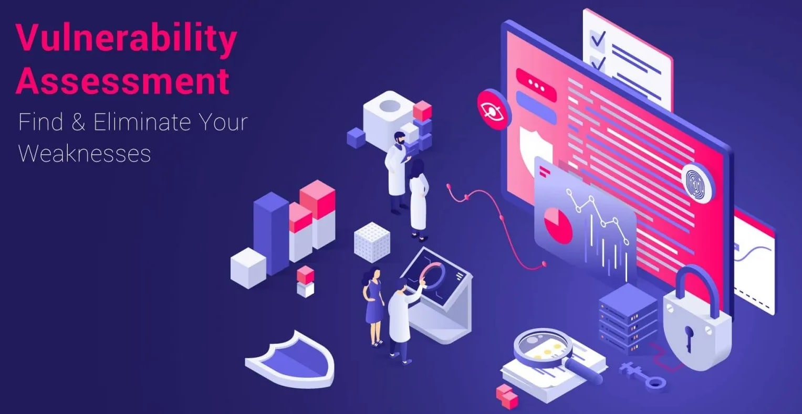
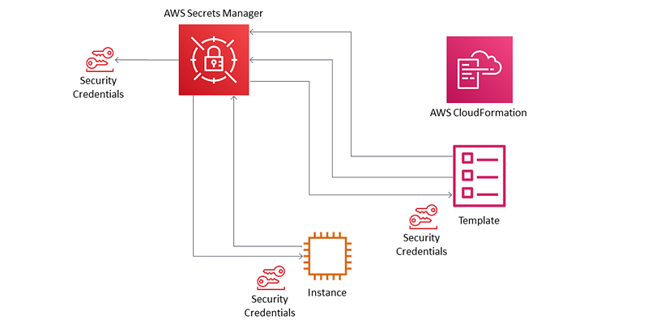

The Incident Response Simulation project's primary objective is to meticulously craft and execute a simulated incident response scenario that emulates a real-world cyber threat. This involves orchestrating a multifaceted incident, from its initial detection to the resolution phase. The simulation is designed to challenge the incident response team and associated stakeholders with various scenarios that mimic potential cybersecurity incidents.
The project entails the creation of a detailed incident response plan that outlines the step-by-step procedures to be followed during the simulation. This plan is developed based on industry best practices, regulatory requirements, and the organization's threat landscape. The simulated incident could involve a ransomware attack, a data breach, or a sophisticated malware infiltration.
The Security Awareness Training Program is designed to cultivate an organisation's cyber resilience culture by developing and implementing a comprehensive training initiative for its employees. The project aims to enhance employees' understanding of cybersecurity best practices, instil a heightened sense of vigilance, and reduce the organisation's susceptibility to cyber threats. The program includes engaging materials, interactive training sessions, and simulated phishing exercises to assess and reinforce learned behaviours.

The Network Security Enhancement Project centres around implementing a robust and comprehensive network security solution tailored for small to mid-sized organisations. The overarching goal is to fortify the organisation's digital perimeters against potential cyber threats by deploying cutting-edge technologies and best practices. Key elements of the project include the setup of firewalls, intrusion detection/prevention systems (IDS/IPS), Virtual Private Networks (VPNs), and the establishment of secure network configurations.

Installed and configured Nessus vulnerability scanner on the Windows VM. Conducted comprehensive vulnerability scans using Nessus, including credential scans. Identified and analysed vulnerabilities in the system and installed vulnerable software for testing purposes. Developed and implemented effective remediation strategies to address identified vulnerabilities. Skill: Proficient in configuring and executing scans using vulnerability assessment tools to identify security weaknesses. Applied expertise in recommending and implementing effective remediation strategies for identified vulnerabilities. Experienced in implementing robust security controls and applying harding measures on Windows operating systems. Proficient in preparing comprehensive reports that effectively summarise findings from vulnerability scans. Skilled at documenting remediation actions ensuring clear and concise reporting for relevant parties.

I created Passbolt, a self-hosted password manager, to securely store and manage complex passwords. Utilise AWS cloud services to host passbolt, ensuring scalability, availability, and reliability. Implemented HTTPS encryption to safeguard sensitive data transmitted to and from the password manager. Configured and maintained the domain hosting for the password manager, ensuring accessibility and security. Provided functionality within Passbolt for secure storage of complex passwords, enhancing data protection and user convenience. Skill: Proficient in configuring and managing workloads hosted in an AWS cloud environment and ensuring adherence to cybersecurity best practices. Comprehensive understanding of network security principles and protocols, including TCP/IP, SSL/TLS, and SSH, to successfully implement encryption and ensure transmission of sensitive data.